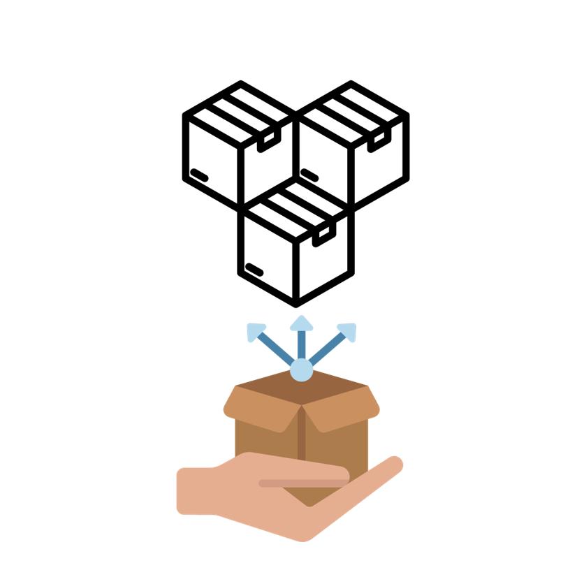
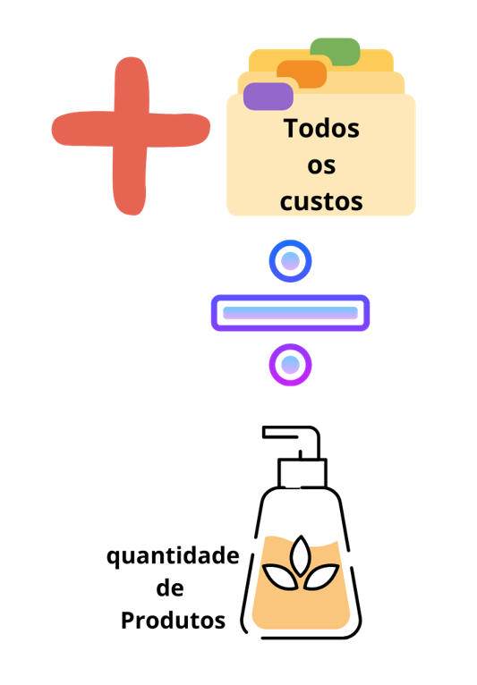

A definição de centros de custos padece de incertezas. Podemos discutir pontos relevantes a serem considerados quando da definição do mapa de centros de custos. Em primeiro lugar, os centros de custos são necessários se e/ou quando diferentes produtos usam, de forma distinta, os diferentes recursos disponibilizados pela organização. Pode parecer confuso em uma primeira leitura, mas, não é.
Vamos explicar iniciando por usar uma situação oposta ou simplificada. Veja a historia ao lado clicando no botão PRÓXIMO.
Suponhamos que uma empresa
faça produtos iguais
Por meio da utilização de recursos igualmente distribuídos em seus departamentos.
Suponha, igualmente, que esta empresa tenha 03 departamentos produtivos e que eles tenham os mesmos recursos.
O custo desses produtos pode ser encontrado por um mecanismo simples: Soma-se todos os custos e divide-se pela quantidade de produtos.Teremos, assim, o custo por unidade produzida.
Este é um método tratado como sendo: Sem Departamentalização (ou, de maneira geral, sem centros de custos). É sempre importante ressaltar que um gestor pode, independentemente dos fatos expostos neste exemplo, solicitar que o custo seja criado desta forma. Sem problemas, o gestor deve saber para quê o quer desta forma.